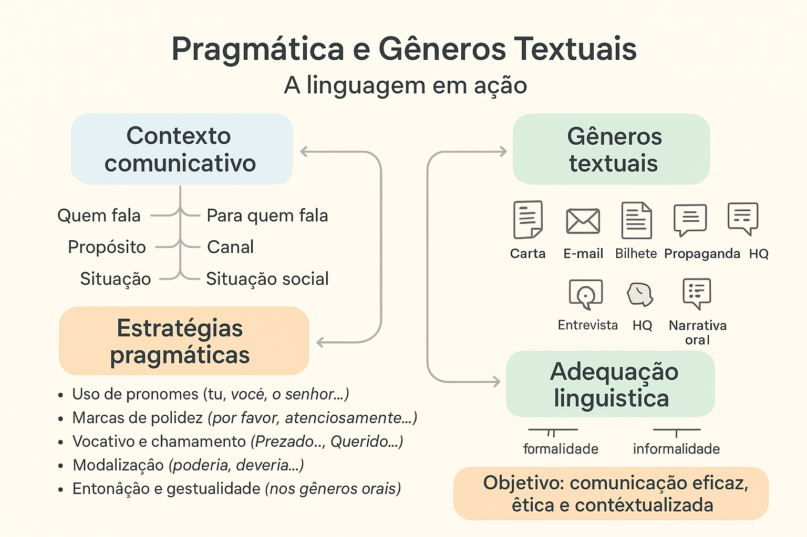

Pragmática e Gêneros Textuais: a linguagem em ação
A pragmática é o ramo da Linguística que estuda o uso da linguagem em contextos reais de comunicação. Ela se interessa não apenas pelo que é dito, mas também pelo que se pretende dizer, pelas intenções dos falantes e pelas interpretações que os ouvintes constroem. Nesse sentido, compreender a pragmática é fundamental para entender como a língua funciona nos diversos gêneros textuais, orais e escritos, que circulam em nossa sociedade.
Pragmática e contexto comunicativo
Todo gênero textual é moldado por um contexto comunicativo, que envolve quem fala, para quem fala, o propósito da mensagem, o canal utilizado e as convenções sociais envolvidas. A pragmática, portanto, ajuda a compreender como esses fatores interferem na escolha das palavras, no tom de voz, na estrutura do texto e nas estratégias de interação.
Por exemplo, um mesmo conteúdo pode ser expresso de maneiras muito diferentes dependendo do gênero:
- Em uma carta pessoal, o emissor pode usar expressões de afeto, saudações e despedidas que revelam proximidade e emoção.
- Em um e-mail profissional, é comum o uso de linguagem mais formal, evitando gírias e respeitando as normas de polidez institucional.
- Em uma propaganda, predominam estratégias persuasivas e apelativas, com o objetivo de convencer ou seduzir o leitor.
- Em uma entrevista, observa-se a alternância de turnos de fala e o uso de perguntas e respostas como mecanismos pragmáticos de interação.
- Nas histórias em quadrinhos, há o uso de recursos visuais e expressivos que complementam o sentido pragmático das falas (entonação, humor, ironia, emoção).
Estratégias pragmáticas conforme o gênero
Cada gênero textual se caracteriza por um conjunto de estratégias pragmáticas que orientam o modo como a linguagem é usada para atingir determinados efeitos comunicativos. Entre essas estratégias, destacam-se:
- Uso de pronomes: a escolha entre “tu”, “você”, “o senhor” ou “a senhora” indica diferentes níveis de formalidade, respeito ou proximidade. Em bilhetes informais, o uso tende a ser mais direto; em cartas formais, mais respeitoso.
- Marcas de polidez: expressões como “por favor”, “agradeço desde já”, “com licença” ou “atenciosamente” cumprem papel essencial na manutenção das relações sociais e variam conforme o gênero e o interlocutor.
- Vocativo e chamamento: o modo como o emissor se dirige ao destinatário revela intenções pragmáticas. Em uma carta, “Querido amigo” estabelece proximidade; em um e-mail institucional, “Prezado professor” indica respeito e distância formal.
- Modalização: uso de verbos modais (“poderia”, “deveria”), advérbios e expressões que atenuam ou intensificam a mensagem, ajustando o grau de envolvimento e de cortesia.
- Entonação e gestualidade (nos gêneros orais): pausas, ênfases e expressões faciais complementam o sentido pragmático e ajudam o interlocutor a compreender intenções implícitas.
Pragmática e adequação linguística
Um dos conceitos centrais da pragmática é a adequação linguística, isto é, a capacidade de escolher a forma mais apropriada de se comunicar em cada situação. Um mesmo enunciado pode ser adequado em um contexto e inapropriado em outro, dependendo das relações sociais entre os participantes e das normas do gênero.
Assim, compreender a pragmática nos gêneros textuais significa desenvolver uma competência comunicativa que vai além da gramática: envolve interpretar intenções, reconhecer implícitos, respeitar convenções sociais e adaptar o discurso conforme o interlocutor e o propósito comunicativo.
Pragmática nos textos da vida cotidiana
No cotidiano, aplicamos princípios pragmáticos o tempo todo, ainda que de forma intuitiva. Ao escrever um bilhete para um colega, ao responder uma mensagem no celular ou ao participar de uma entrevista de emprego, estamos fazendo escolhas linguísticas que refletem nossa intenção comunicativa e nossa percepção do contexto.
Trabalhar a pragmática na escola, portanto, é desenvolver nos alunos a habilidade de usar a língua de maneira eficaz e ética em diferentes situações — formais ou informais, orais ou escritas. Isso contribui para a formação de cidadãos capazes de compreender e produzir textos com clareza, adequação e intencionalidade.
Para refletir
“A linguagem é uma forma de ação: quando falamos, não apenas descrevemos o mundo, mas agimos sobre ele.”
— John Austin, filósofo da linguagem
Com essa perspectiva, o estudo da pragmática e dos gêneros textuais revela a língua como um instrumento vivo de interação social — um meio pelo qual negociamos sentidos, estabelecemos vínculos e construímos nossa identidade discursiva.